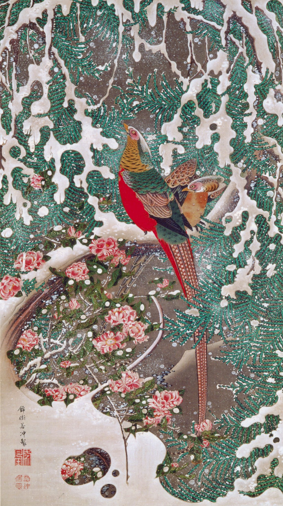

作品名 「雪中錦鶏図」
花言葉 「困難に打ち勝つ」「ひたむきさ」
サザンカ
「困難に打ち勝つ」
童謡『たきび』の歌詞に登場することでもよく知られる。漢字表記の山茶花は中国語でツバキ類一般を指す山茶に由来し、サザンカの名は山茶花の本来の読みである「サンサカ」が訛ったものといわれる。もとは「さんざか」と言ったが、音位転換した現在の読みが定着したと言われている。花言葉の「困難に打ち克つ」「ひたむきさ」は、寒さが強まる初冬にかけて花を咲かせることに由来するといわれます。
雪中錦鶏図
伊藤若冲
伊藤若冲の作品『動植綵絵』（どうしょく さいえ）動植物を描いた彩色画の一つ。キンケイは中国では花鳥画の題材であり、若冲の時代には実物や剥製が渡来していました。若冲は、この作品より前の「禽鳥図」や、60歳代の作と推定される「白梅錦鶏図」でもキンケイを描いています。ドロドロとした粘着性を感じさせる雪が、カヤ（もしくはアスナロ）に積もり、画面の下の方にはサザンカが咲いています。
| 作品名 | 雪中錦鶏図 |
| 作者 | 伊藤若冲 |
| 制作年 | 1761年〜1765年 |
| 種類 | 絹本着色 一幅 |
| 寸法 | 142.1×79.5cm |
| 所蔵 | 宮内庁三の丸尚蔵館 |